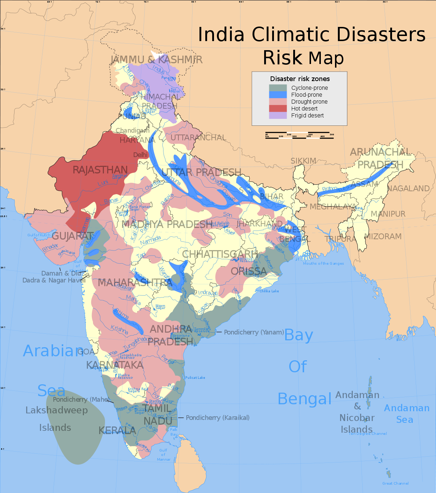
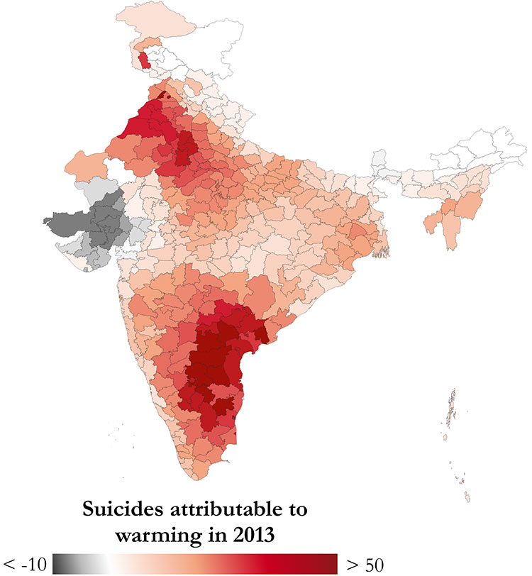
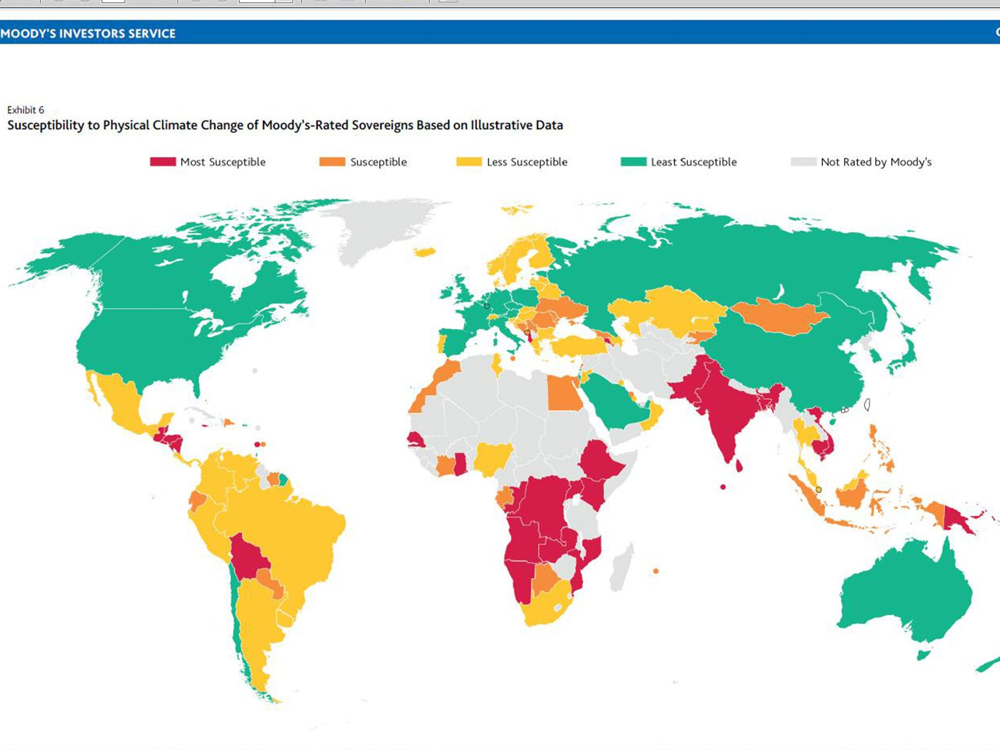

OUR EARTH - DEAD OR ALIVE |
||||
| Home | Climate Change | Plastic Segregation | Geographical Representation | About |
OUR EARTH - DEAD OR ALIVE |
||||
| Home | Climate Change | Plastic Segregation | Geographical Representation | About |
|  |
This map shows the severity of risks that different parts of India face. The color codes represent the different types of disasters that are expected to be faced by different regions including natural disasters such as cyclones and droughts. |
|  |
Reports suggest that global warming has led to factors which have significantly affected the farming community, leading to more and more suicides every year. The biggest factor responsible is the infrequent rainfall pattern that wrecks hovac with the timing of different crops and with sowing and harvesting times. This has lead to significant losses, which become even more dangerous and unbearable for small farmers for whom the crop is their only daily bread. Global warming has been responsible for these deaths and from this map we can clearly see that the suicides are concentrated in regions which are highly dependent on farming as their largest employer. |
|  |
This map shows the susceptibility of different regions to climate change (specifically, global warming). It is pretty much clear that the regions which are the least responsible for leaving any carbon footprint have been deeply affected by effects of climate change. Also, the country’s economic condition is also a reliable indicator of how much the country is susceptible to these adverse effects. African, Latin American and Asian countries are the ones which are deeply affected. However, the economically better off countries fare better with respect to making themselves immune to the effects rendered due to climate change. Poor countries, on an average, are paying the price of the carbon footprint left by the better-off nations. |
{kind=link}
{kind=link}